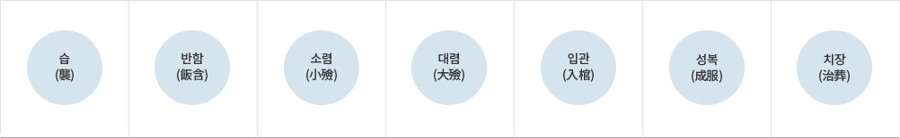

- >
- 홍보채널
- >
- 장례정보
장례정보
염습 및 입관, 그리고 성복의 절차가 진행된다. 고례에는 죽은 첫날 목욕과 습을 했었으나, 현대는 의학의 발달로 숨을 멈추고 24시간이 지나기 전에는 회생 가능성이 있으므로 죽은 다음날 절차를 진행한다. 그리고 고례에는 습·소렴·대렴을 다른 날로 바꾸어 했으나, 3일장을 치는 현대는 동시에 진행할 수밖에 없다.

습(襲)
- 죽은 이에게 수의를 입히는 절차이다.
- 옷을 입히는 일도 죽은 이가 남자이면 남자근친이 하고, 여자이면 여자근친이 한다.
- 웃옷은 속저고리부터 도포나 활옷까지 전부 겹쳐서 소매를 한데 꿰어놓고, 아래옷은 속바지부터 치마나 바지까지 모두 겹쳐서 가랑이를 한데 꿰어 놓는다. 모든 옷을 단번에 입히기 위해서이다.
- 시체의 머리 허리 다리 쪽을 좌우에서 조심스럽게 들어 펼쳐진 옷 위로 반듯하게 옮긴다.
- 허리와 다리를 좌우에서 들고 홑이불을 떠들고 아래옷 가랑이를 꿰어 입히고, 머리와 허리를 좌우에서 들고 홑이불을 떠들고 웃옷의 소매를 꿰어 입힌다.
- 웃옷이나 아래옷이나 섭을 여미는 방법은 산 사람과 반대로 왼쪽을 먼저 여미고 오른쪽이 위가 되게 나중에 여민다. 옷고름 허리띠와 띠를 맨다.
- 모든 끈은 다시는 풀 일이 없기 때문에 고를 내지 않는다.
- 손톱과 발톱을 깎아 주머니 5개 중 머리털을 넣고 남은 4개에 좌우를 나누어 담는다. 만일 죽은 이가 평소에 손·발톱을 모으던 사람이면 그것도 함께 담는다.
- 버선을 신기고, 남자면 대님을 매고 행전을 치고, 신을 신긴다. 이어서 남자면 토시를 끼우고, 악수로 손을 싸서 묶는다.
- 깨끗한 홑이불이나 천금(天衾)으로 시체를 덮는다.
반함(飯含)
- 죽은 이의 입에 반함을 한다.
- 주상, 주부이하 모든 복인 들어와서 정한 자리에 꿇어앉는다.
- 주부가 반함(불린 쌀)을 쟁반에 담아 들고, 발쪽으로 돌아서 주상의 오른쪽에 꿇어앉는다.
- 주상이 아닌 아들이 죽은 이의 머리를 들고, 주부가 아닌 며느리가 베개를 뺀다. 머리를 바닥에 놓는다.
- 주상이 머리 쪽의 홑이불을 벗기고, 숟가락으로 쌀을 퍼서 죽은 이의 입안 오른쪽 왼쪽 중앙의 순서를 넣고, 구슬이나 동전을 그렇게 넣는다.
- 남은 반함 준비물을 한쪽으로 치우고, 주부가 발쪽으로 돌아서 원래 자리로 돌아온다.
- 아들은 머리를 들고 며느리는 베개를 머리 밑에 베어준다.
- 주상, 주부이하 모든 복인이 극진하게 슬픔을 나타낸다.
- 이윽고 홑이불로 얼굴을 덮고 주상, 주부이하 근친들은 밖으로 나온다.
소렴(小殮)
- 소렴이란 작은 이불로 주검을 싸고 맬 끈으로 묶는 것을 말한다.
- 작은 이불의 너비는 충분히 주검을 둘러서 쌀 수 있어야 하고(삼베라면 5폭 정도), 길이는 죽은 이 키의 배(약 4m)는 되어야 한다.
- 맬 끈은 끈의 너비가 어떠냐에 따라 먼저 가로매는 몇 가닥을 놓던 폭을 연이은 길이가 죽은 이의 키보다 약 50cm는 더 길어야 하고(삼베라면 7폭 정도) 각 폭의 길이는 주검을 두르고서도 약 60cm의 여유는 있어야 하며, 세로 매는 죽은 이 키의 배에 약 1m정도는 더 길어야 한다.
- 먼저 가로 매를 잇대어 깔고, 그 위에 세로로 세로 매를 놓고, 그 위에 작은 이불을 편다.
- 가로매와 세로 매의 양끝은 모두 3가닥으로 쪼갠다. 그러면 삼베의 경우 가로매가 7폭에 21가닥이 된다.
- 주검을 조심스럽게 들어 작은 이불 위로 옮기고 베개를 뺀다.
- 구겨진 옷을 반듯하게 펴서 왼쪽을 먼저 여미고 그 위로 오른쪽을 여민다.
- 두 손을 배 위에 모아 흉사시의 공수를 시킨다.
- 주머니 5개를 각기 주머니에 담은 내용물(머리털, 손·발톱)의 위치에 놓는다.
- 턱밑, 어깨 위, 팔과 몸 사이, 두 다리 사이, 발등 위 등 빈곳을 헌옷, 종이에 싼 짚, 종이에 싼 흙, 솜 등으로 채워, 묶을 때 몸이 상하지 않게 한다.
- 이불을 먼저 발쪽을 여며 이불 끝이 배 위에 오게 하고, 다음에 머리 쪽을 여며 이불 끝이 배 위에서 발쪽의 끝과 맞닿게 하고, 다음에 왼쪽을 여미고 끝으로 오른쪽을 여며 싼다.
- 세로 매를 배 위에서 모아 세로 매 끝의 3가닥 중에서 아래와 위의 왼쪽 가닥을 먼저 묶고 다음에 오른쪽 가닥을 묶고 끝으로 가운데 가닥을 묶는다.
- 가로매는 위에서부터 아래로 묶어 내려가는데 첫째 가닥은 묶지 않고 왼쪽을 먼저 여미고 오른쪽을 다음에 여며 머리를 보기 좋게 싸고, 이어서 둘째 가닥도 왼쪽을 먼저 여미고 오른쪽을 다음에 여민 다음 셋째 가닥을 위 두 가닥을 여민 위의 중에서 묶는다.
- 계속해서 묶어 내려가는데 마지막의 발쪽도 일곱 째 폭의 3가닥 중 제일 아래 2가닥은 머리 쪽과 같이 여미기만 하고 묶지 않고, 3째 가닥만 묶는다.
- 전체 7폭에 21가닥인데 머리와 발쪽 2가닥씩, 합해서 4가닥은 묶지 않고 여미기만 하므로 묶은 매듭은 모두 17매듭이 된다.
- 모든 매듭은 다시 풀 일이 없기 때문에 고를 내지 않으며 매듭이 위에서 아래로 일직선이 되고 간격이 고르게 묶는다.
- 편리하게 하려면 소렴, 습의를 동시에 준비할 수도 있다. 먼저 가로매 7폭을 놓고, 그 위에 세로 매 1폭을 길게 놓고, 그 위에 소렴금을 펴고, 소렴금 중앙에 수의 펴고, 시신을 옮겨 습의하고, 반함하고, 그 자리에서 소렴을 하면 시신을 옮기는 횟수가 줄어 편리하다.
대렴(大殮)
- 대렴이란 큰 이불로 주검을 싸고 맬 끈으로 묶는 것을 의미한다.
- 큰 이불의 크기와 맬 끈의 길이 등은 소렴 때와 같다.
- 먼저 맬 끈 가로매 5폭을 깔고, 그 위에 세로로 세로 매 1폭을 깐 다음, 그 위에 큰 이불을 편다.
- 각 맬 끈의 양 끈을 3가닥으로 쪼갠다. 그러면 가로매는 5폭에 15가닥이 된다.
- 큰 이불을 아래 위 왼쪽, 오른쪽 순으로 여미고, 세로 매를 배 위에서 왼쪽 가닥, 오른쪽 가닥 가운데 가닥 순으로 묶는다.
- 가로매는 머리 쪽 첫 폭의 첫 번째와 두 번째 가닥은 묶지 않고 왼쪽 오른쪽의 순으로 여미기만 하고 세 번째 가닥부터 중앙에 모아 묶는 것은 소렴 때와 같다. 발쪽도 소렴 때와 같다.
- 전체 매듭수는 가로매 5폭 15가닥 중에서 머리 쪽 발쪽의 4가닥은 여미기만 했으니까 11매듭이 된다.
- 주검의 상중하에 삼베나 무명은 폭을 길이 4m정도씩 잘라 들 끈을 3가닥 만들어놓는다. 그래야 입관이나 묘지에서 시신을 하관할 때 편리하다.
입관(入棺)
- 대렴까지 한 주검을 관에 넣는 일이다.
- 바닥에 관 받침대를 상중하에 놓고 그 위에 관을 위가 북쪽이 되게 올려놓고, 뚜껑을 연다.
- 관의 바닥이나 4방에 흰 종이를 깔고, 바닥에 지요를 깔고 머리 쪽에 베개를 놓은 다음, 들 끈을 들어 주검을 관 안에 모신다.
- 천금을 덮고 들끈을 천금 위에 서려서 놓고 흰 종이로 덮은 다음 빈 곳을 헌 옷 등으로 보침(메꿈)한다.
- 주상, 주부이하 모든 복인이 들어와 슬픔을 나타낸 다음 뚜껑을 덮고, 나무못이나 격자(格子) 등으로 뚜껑을 고정시킨다.
- 든든한 끈으로 관의 상중하를 묶은 다음 들 끈을 상중하에 만든다.
- 방의 한쪽에 머리가 북쪽을 향하게 관을 안치하고, 관 앞에 병풍을 둘러친 다음 발치 쪽에 명정을 세운다.
- 영좌를 다시 설치하는데 사진에 검은 리본을 걸친다.
성복(成服)
- 성복(成服)은 고례에는 반드시 대렴을 한 다음날에 성복을 한다고 했으나, 3일장을 치르는 현대는 그렇게 할 수가 없으므로 입관한 즉시 성복을 한다.
- ※ 성복이란 주상, 주부이하 모든 복인들이 정해진 상복을 입는 것을 말한다.
- 상복(喪服) : 예전에는 복친의 범위에 따라 착용하는 상복의 종류도 다르고 다양하였다. 그러나 현대에는 남자는 검은 양복, 여자는 흰색이나 검은색의 한복을 많이 착용하고 있으나 검은색 양장을 착용하기도 한다. 또한 상주임을 표시하는 표식을 하기도 한다. 그리고 평소에 준비해 둔 상복이 있으면 착용하기도 하며, 베로 만든 굴건제복(屈巾制服)을 착용하기도 한다.
치장(治葬)
- 치장이란 주검을 땅에 묻든, 화장하여 납골하든 죽은 이에 대한 마지막 갈무리를 하는 절차이다.